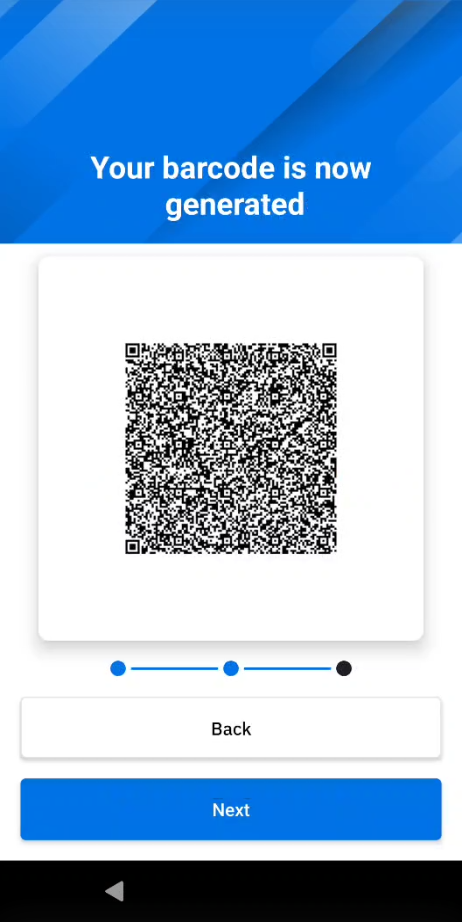
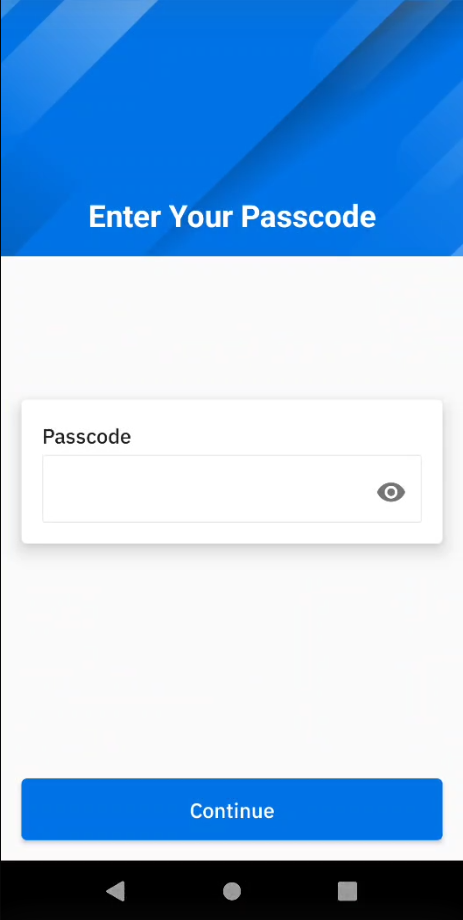
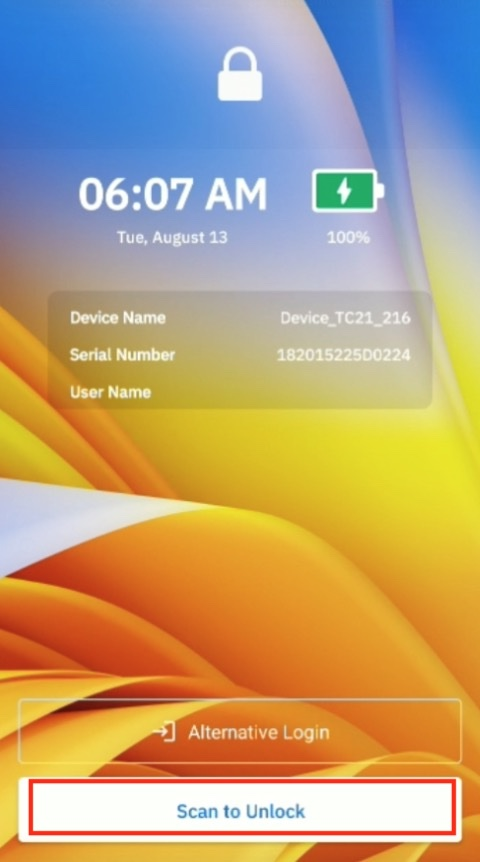
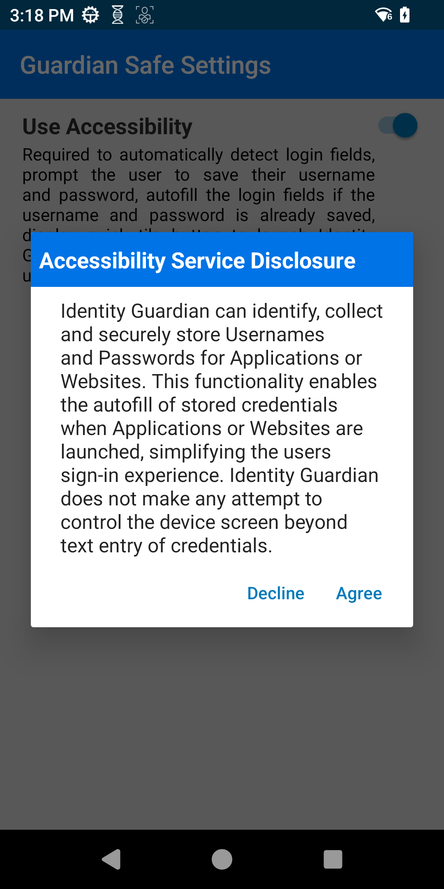
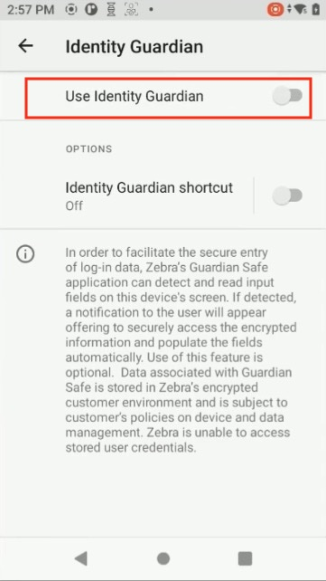
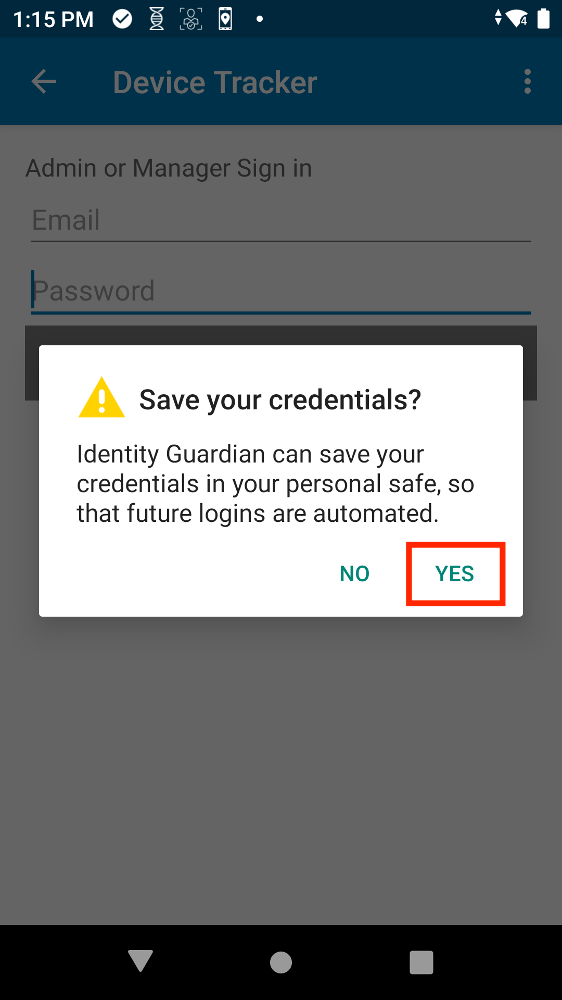
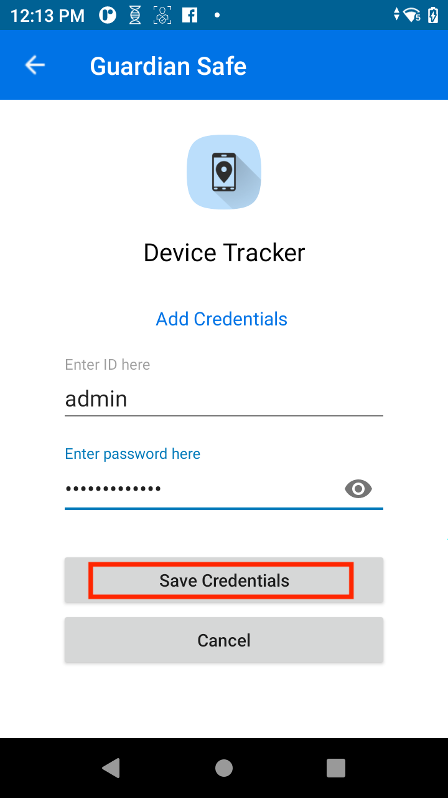
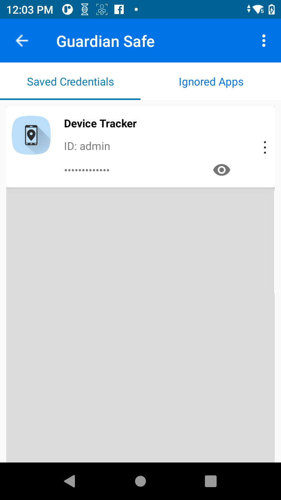
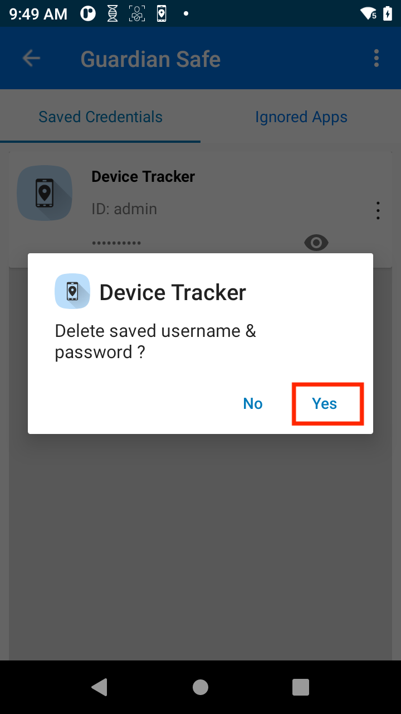
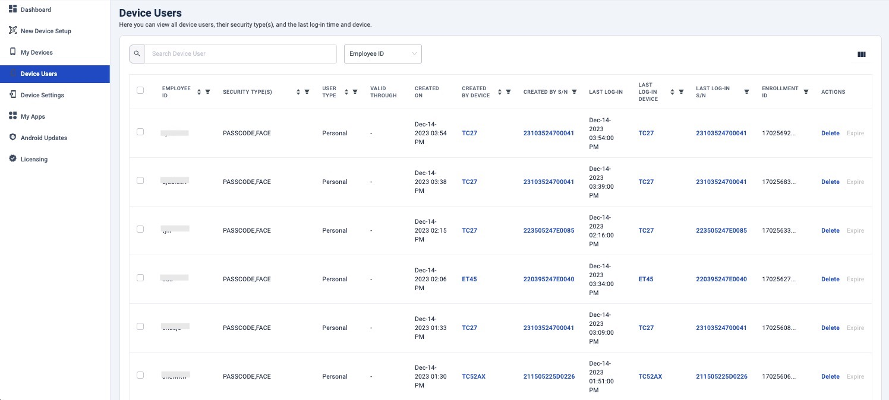

Overview
Administrators must configure Identity Guardian and set up profiles tailored for either shared or personally assigned devices.
All users are required to complete a one-time enrollment process on their device before they can authenticate and sign in. For users choosing to utilize facial biometrics, Identity Guardian presents customizable Terms and Conditions, which must be accepted to proceed with this method. Once enrollment is complete, users can sign in and sign out of the device as needed.
Additional features include:
- Guardian Safe: Save and manage app login credentials
- Lock Screen Enhancements: Alternate sign-in, custom messages, auto-unlock and admin bypass features
User Enrollment
The user enrollment procedure varies depending on the device access method:
- Shared Device
- Personally Assigned Device
Shared Device
Before users can sign in or authenticate on a shared device, they must first register with Identity Guardian. Administrators create and deploy the enrollment profile, then launch Identity Guardian on the shared device to initiate the enrollment process. Alternatively, a designated device may be used for user enrollment, with administrators optionally guiding users through this initial setup.
The options available to users during the on-device enrollment process vary based on the Enrollment Configurations set by the administrator. For more details on how to apply the settings, see the EMM Setup section.
Administrators also need to create and deploy an authentication profile to enable users to authenticate on their shared devices after enrolllment is complete.
Admin-Guided
To enroll users on shared devices:
- In Identity Guardian, tap Start.

- (Optional) This is a 6 digit PIN set by the administrator. Tap Continue.

- Setup ID and passcode:
- Enter ID or email
- (Optional) Select the appropriate user role (options vary based on your adminstrator setup)
- (Optional) Enter the expiration date for the barcode. This applies for temporary users.
- Create a passcode based on the requirements set by the administrator.
- Re-enter the passcode

- (Optional) Capture facial biometrics. If opting out, tap Skip and skip to step 7 below. Otherwise, tap Add and continue with the subsequent steps.

- Read the Terms & Conditions. Tap Confirm to accept.

- Position your face within the device screen for the photo capture. Capture 1 to 3 facial photos that may vary based on the individual's look, for example, with eyeglasses, hat, etc. Confirm the photo capture(s). Tap Add to capture additional photos. Tap Next when done.

- The barcode is generated. Tap Next. 
- Tap Save to save the profile.

- Tap Continue. The enrollment profile creation is complete.

Upon completion of user enrollment on the shared device, the administrator proceeds to deploy the authentication profile, which enbles users to sign into the device.
Personally Assigned Device
Before users can sign in or authenticate on a personally assigned device, they must first register with Identity Guardian. Administrators create and deploy the personally assigned profile, then launch Identity Guardian on the device to initiate the enrollment process. The options available to users during the on-device enrollment process may vary based on the Enrollment Configurations set by the administrator.For more details on how to apply the settings, see the EMM Setup section.
After the enrollment process, the user is immediately presented with the authentication screen.
To enroll users on personally assigned devices:
- Open Identity Guardian.
- Tap Start.
- Enter corporate PIN. This is a 6 digit PIN set by the administrator. Tap Continue.
- Setup ID and passcode, then tap Next.
- Enter ID or email
- (Optional) Select the appropriate user role (options vary based on setup by your adminstrator)
- Create a passcode, which can contain up to 6 alphanumeric characters.
- Re-enter the passcode.

- (Optional) Capture facial biometrics. If opting out, tap Skip and skip to step 7 below. Otherwise, tap Add and continue with the subsequent steps.
- Read the Terms & Conditions. Tap Confirm to accept.
- To add a facial photo, tap Add. Position your face within the device screen for the photo capture. Capture 1 to 3 facial photos that may vary based on the individual's look, for example, with eyeglasses, hat, etc. Confirm the photo capture(s). Tap Add to capture additional photos. Tap Next when done.
- Tap Save to save the profile.
- Tap Continue. The profile creation is complete.

Edit Profile
To edit a profile on a personally assigned device:
- Open Zebra Biometric app.
- Enter your passcode. 
- Select the item to edit:
- ID & Passcode
- Face Recognition

- If ID & Passcode is selected, make the appropriate edits and tap Save:
- Role - select the desired role
- Passcode - enter the current passcode and the new passcode

- If Face Recognition is selected, delete the existing facial photo and replace it by capturing a new photo.

Delete Profile
To delete a user profile on a personally assigned device:
- Open Zebra Biometric app.
- Enter your passcode.
- Tap on the menu icon at the top right and select Delete Profile.

After the user profile is deleted, the enrollment screen appears for a user to re-enroll to the device and authenticate the user.
Sign In (Authentication)
After a user is enrolled, the authentication screen is displayed on the device. This screen also appears based on the Lock-screen Event options defined by the administrator in the Managed Configurations. These options can be triggered from various events such as when a user signs out, locks or reboots the device.
To sign in or authenticate to a device, tap Unlock.

The device prompts the user to authenticate based on the Authentication Configuration defined by the admin. The designated primary authentication method is presented first. If the primary authentication method fails, the designated secondary authentication method is presented. The fallback authentication is presented if the primary authentication fails and no secondary authentication is defined, or both primary and secondary authentication fails. Unlicensed devices present a passcode to be entered rather than requesting for a facial biometric.
Microsoft Authenticator
If Microsoft Authenticator app is in use, perform the following after the user unlocks the screen:
The Microsoft Authenticator app is launched prompting for user authentication. Enter the login credentials:

After authentication is successful, the user gains access to the device.
When a user launches any app that utilizes Microsoft Authenticator app as broker, the app automatically signs in without prompting for user name or password.
Non-Identity Guardian Barcode
A user barcode, known as a Legacy Barcode, can be used to authenticate users even if it was not generated by Identity Guardian. This is useful in organizations where user barcodes already exist. These barcodes must be 1D and have a defined prefix. Upon scanning, the prefix is disregarded, and the user name serves as the identifier. When the device is locked, the user name is prominently displayed on the lock screen.
Note: Legacy Barcode is not encrypted and, therefore, not secure. For shared devices, Zebra recommends using encrypted barcodes for secure authentication. See Managed Configurations for more information.
Admin Setup
Configure Managed Configurations:
- Authentication Configuration - Expand User Verification Methods:
- Verification Setup
- Enable Comparison Source and select LEGACY BARCODE.
- Under Primary Authentication Method:
- Enable Primary Authentication Factor and set this to NO_COMPARISON.
- Enable Secondary Authentication Factor and set this to NONE.
- Enable Fallback Authentication Method and set this to NONE.
- Legcy Barcode Options:
- Enable Legacy Barcode Prefix and enter the prefix used to validate the barcode. The barcode must begin with this prefix, otherwise the user will not be authenticated. Without a prefix, the user will not be authenticated.
- Verification Setup
- Save the changes.
Usage
- On the lock screen, tap the Scan to Unlock button.
- Scan the user barcode. The user gains access to the device.

- Lock the device. The user name is displayed in the lock screen.

Admin Bypass
A user can bypass authentication by entering the Admin Bypass Passcode, useful for situations where authentication credentials are forgotten. Access is granted provided the user has received the bypass passcode from an admin. While this feature allows device access, it does not track user accountability. It offers a direct method to enter the passcode, as opposed to the alternative fallback authentication (part of the Authentication Configuration scheme), which requires multiple failed authentication attempts.
Admin Setup
Configure Managed Configurations:
- Lock Screen Configuration: Expand Lock-screen Menu.
- Enable Enable Admin Bypass Passcode on Lock screen and set it to true.
- Save the changes.
Usage
- In the lock screen, tap the menu icon in the top right corner and select Admin Bypass.
- Enter the Admin Bypass Passcode provided by your administrator and tap Unlock.
- The user gains device access.
Alternate Sign-In
Alternate Sign-In, also known as Alternative Login, enables users of shared devices to log in as diffeerent users. This feature is useful for scenarios involving temporary users or those who do not have full-time access, ensuring user accountability is tracked.
Note: The user must be enrolled on the device before using the alternate sign-in method.
Admin Setup
Configure Managed Configurations:
- Authentication Configuration - Expand Lock-screen Event Options:
- On Unlock / OnReboot / On AC power connected / On AC power disconnected / On device manual checkin / On user change
- Enable Alternative Verification Setup and select the desired Verification Setup that specifies the authentication required for the alternate login.
- On Unlock / OnReboot / On AC power connected / On AC power disconnected / On device manual checkin / On user change
- Lock Screen Configuration - Expand Lock Screen Menu:
- Enable Customize Alternative Login Button and enter a name for the button designated for alternate login.
- Save the changes.
Usage
- On the lock screen, tap the button with the customized text located above the Unlock button. The text on this button is based on the admin configuration.
- Scan the user barcode and perform facial authentication.
- The user gains device access.
User Authentication Scenarios
This video demonstrates various scenarios of user device authentication. In this example, one group of authentication settings is applied to a shared device with the following configurations:
- Comparison source: Barcode
- Primary authentication: SSO
- Secondary authentication: Passcode
- Fallback authentication: Admin bypass passcode
Sign Out
Sign Out only applies to shared devices. To sign out a device, perform one of the following:
- Open Identity Guardian app (Zebra Biometric) and tap Sign out.

- Swipe down to open the notification drawer. From the Identity Guardian notification, tap Sign Out.

- Lock the device.
- Restart the device (if configured by the administrator).
After a device is signed out, the lock screen is visible:
Lock Device
This section discusses features designed to enhance user experience and security on the device lock screen.
Custom Message
A user can create a custom message to display on the lock screen, which can be useful in various scenarios. For shared device users, it allows them to leave instructions for the next user. For personally assigned device users, it can serve as a device identifier or a personal reminder. This custom message remains visible to all users when they sign in or sign out of the device.
Admin Setup
Configure Managed Configurations:
- Lock Screen Configuration - Expand Custom Lock Screen Message:
- Enable Allow Custom Lock Screen Message and set it to true.
- Enable Custom Lock Screen Message Source and select App Specific.
- Save the changes.
Usage
To create or edit a custom message on the lock screen:
- Sign in to the device to gain device access.
- Open Identity Guardian from the apps menu.
- From the top right, tap on the message icon to access the message settings.

- Enter the message to display on the lock screen, then tap Save.
- Lock the device. The custom message is now displayed on the lock screen.
Auto-Unlock
Auto-Unlock seemlessly unlocks the device using facial authentication, eliminating need to tap a button on the lock screen. With this feature enabled, users are immediately prompted to scan their face for authentication when unlocking the device, bypssing the extra step.
Requirements:
- Face must be configured for primary authentication.
- For shared devices, Authentication Data Storage must be enabled (not required for personally assigned devices).
Admin Setup
Configure Managed Configurations:
- Lock Screen Configuration - Expand User Verification Methods:
- Verification Setup1:
- Enable Comparison Source and select BARCODE.
- Expand Primary Authentication Method. Enable Primary Authentication Factor and select FACE.
- Verification Setup1:
- Lock Screen Configuration - Expand Auto Unlock:
- Enable On Unlock and select true.
- Save the changes.
Usage
- On the lock screen, tap the unlock button:
- For shared devices: Scan to Unlock
- For personally assigned devices: Unlock 
- Scan the user barcode and then scan the user's face for facial authentication. The barcode scan is needed for first-time authentication.
- The user gains access to the device.
Subsequent Unlock Attempts: When unlocking the device (e.g. pressing the power button or swiping to unlock), the user is immediately prompted to scan their face for authentication, bypassing the need to tap the unlock button.
Guardian Safe
Early Access Preview: The Guardian Safe feature is provided as an Early Access Preview. As such, please note that this feature is subject to change in future Identity Guardian releases. Please contact Zebra support for Guardian Safe activation on ZDNA Cloud.
Guardian Safe securely stores user credentials after a single entry on the login screen, automatically populating them for future logins within applications. This streamlines the login process for shared devices in both SSO and non-SSO environments, thereby enhancing productivity and security. Once Guardian Safe is enabled, any application with a login screen will prompt the user to save their credentials, if they are not already saved.
Features:
- Securely store credentials (user names and passwords) for both native and web applications (Microsoft Edge and Google Chrome)
- Save credentials directly from the login screen of any application
- Automatically populate user and password fields with saved credentials
- Designate specific apps as "ignored," preventing their credentials from being saved
- View a list of apps with saved credentials and ignored apps
- Modify or delete saved credentials
Important Notes:
- Lost Barcodes: If an Identity Guardian user loses their barcode, the stored information in Guardian Safe cannot be accessed with a newly created enrollment barcode. Consequently, new credentials (user name and password) must be saved again for all applications.
- Supported Authentication Values: Only applications with user ID and password fields are supported. Applications requiring OTP (one-time password) fields are not supported. Acceptable values for the user ID can vary by application and may include values such as an email address, phone number or user name.
Requirements:
- Internet access
- Identity Guardian license
- ZDNA Cloud activation of Guardian Safe by Zebra support
Prerequisites:
- ZDNA Cloud Registration and Guardian Safe Feature Activation:
- Register with Zebra.com based on the instructions provided in ZDNA Cloud Setup.
- Login to your ZDNA Cloud instance. After successful login, send the email ID registered in the ZDNA Cloud instance to your Zebra representative to activate the Guardian Safe preview feature.
- Device Enrollment: Ensure the device is enrolled and connected to Zebra DNA Cloud.
- Set Authentication Scheme: The administrator must establish an authentication scheme that includes a barcode in combination with either facial biometrics or a user passcode. Additionally, the user enrollment barcode that includes Guardian Safe MUST be regenerated.
- Enable Temporary Data Storage: Enable this option in Authentication Configuration from Managed Configurations.
Enable Guardian Safe
Enable Guardian Safe through Guardian Safe Configuration in Managed Configurations and configure the other available options as needed. Once enabled, Accessibility Service permission must be granted to allow user credentials to be automatically populated.
Choose one of the following methods to grant Accessibility Service permission:
Automatically Grant Accessibility Permission - The administrator can enable the Automatically Grant Accessibilty Permission option in Guardian Safe Configuration under Managed Configurations. Once this option is enabled, the Guardian Safe Settings screen will display Use Accessibility: On/Off as grayed out, making it non-changeable by the user and no user interaction is required.
Manually Grant Accessibility Permission - User intervention is required to accept the required permission. The user should follow these steps:
- Open Identity Guardian.
- Tap the menu icon in the top right corner and select Guardian Safe.

- Scan the Identity Guardian user barcode. Perform a facial biometric scan or enter the user passcode.
- Tap the menu icon in the top right corner and select Settings.

- Grant the Android Accessibility Service permission for Identity Guardian:
- Toggle to enable Use Accessibility: On/Off.

- When the Accessibility Service Disclosure statement appears, tap Accept. 
- In the Accessibility screen, tap Identity Guardian.
- Enable Use Identity Guardian. 
- Tap Allow.

- Tap Back continuously until Guardian Safe is closed.
- Toggle to enable Use Accessibility: On/Off.
Save Credentials
To save user app login credentials:
- Open an app with a login screen (containing a user ID and password field)
- Tap the password field.
- A prompt appears asking if the user would like to save their credentials. Tap Yes. (If No is selected, the user credentials are not saved, requiring the user to manually enter their credentials each time they log in to the app.) 
- The Guardian Safe input screen appears. Enter the user credentials and tap Save Credentials. 
- The user login credentials are now saved and will automatically populate in future login attempts when tapping the user name or password field.
Auto-Populate Credentials
After an application's login credentials are saved, subsequent login attempts will automatically populate the credentials in the login screen.
- Open an app where the login credentials have previously been saved.
- Tap the user name or password field on the login screen. The user is prompted to authenticate via facial biometric scan or passcode entry.
- Upon successful authentication, the login credentials are automatically populated in the respective fields.

- Tap the sign-in button to access the app.
View Apps
To view apps with login credentials saved in Guardian Safe:
- Open Identity Guardian.
- Tap the menu icon in the top right corner and select Guardian Safe.
- Scan the Identity Guardian user barcode. Perform facial authentication or enter the user passcode.
- A list of apps with saved passwords appear in the Saved Credentials tab. 
Ignored Apps
Prevent Guardian Safe from saving login credentials from specific apps by designating them as Ignored Apps:
- Open an app in the login screen.
- When prompted to save the user credentials during login, tap No.

- The user is directed back to the login screen and the login credentials are not saved.

Future login attempts in this app will no longer trigger Guardian Safe to offer saving the login credentials and the Guardian Safe floating quick access button is no longer present. Additionally, the app is now listed under the Ignored Apps tab in Guardian Safe.
To view all Ignored Apps:
- Open Identity Guardian.
- Tap the menu icon in the top right corner and select Guardian Safe.
- Scan the Identity Guardian user barcode. Perform facial authentication or enter the user passcode.
- Tap the Ignored Apps tab. A list of ignored apps is displayed.

Edit Credentials
There are two methods to modify an app's login credentials saved within Guardian Safe:
- Using Guardian Safe's floating quick access button on the app's login screen
- Through Guardian Safe directly with Identity Guardian
Floating Quick Access Button: To edit the login credentials for an app using the Guardian Safe floating quick access button:
- In the app's login screen, tap on the Guardian Safe floating quick access icon.
- Guardian Safe appears, allowing for the user name or password to be changed. Make the desired changes and tap Save Credentials.
- The updated credentials are now saved.
- Future login attempts in the app will automatically be populated with the updated login credentials.
Guardian Safe: To edit the login credentials for an app through Guardian Safe:
- Open Identity Guardian.
- Tap the menu icon in the top right corner and select Guardian Safe.
- Scan the Identity Guardian user barcode, then perform facial authentication or enter the user passcode.
- In the Saved Credentials tab, find the app to modify. Tap its hamburger menu on the right and select Edit.
- Edit the user name and/or password.
- Tap Save Credentials.
- Future login attempts in the app will automatically be populated with the updated login credentials.
Delete Credentials
To delete app login credentials saved in Guardian Safe:
- Open Identity Guardian.
- Tap the menu icon in the top right corner and select Guardian Safe.
- Scan the user's Identity Guardian barcode, then perform facial authentication or enter the user passcode.
- The apps with passwords saved are listed. In the Saved Credentials tab, find the app to modify the credentials. Tap its hamburger menu on the right and select Delete.
- Tap Yes in the confirmation message. 
- The app is removed from the list.

Delete Users
Users can be removed from the Device Users section in ZDNA Cloud. When a user is deleted, all saved application credentials and the user enrollment barcode are removed. To regain access, The barcode must be regenerated for the same user.
ZDNA Cloud
With the Zebra DNA Cloud platform, Identity Guardian provides administrators with visibility into user activities. This includes the ability to track who has signed in and out of devices, the security measures in place, usage times, and more. Additionally, administrators have the ability to expire users, reset PIN passcodes, and override screen locks.

For more information, see the ZDNA Cloud documentation.